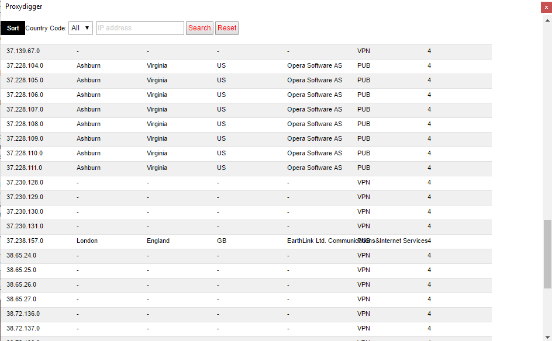

:: Proxydigger ::
1. What is it and what does it do?
Proxydigger is a simple proxy address browser for Windows.
1.2. Features
- Supports the free IP2Proxy LITE IP-PROXYTYPE-COUNTRY-REGION-CITY-ISP Database (ipv4 binary file) with millions of updated proxy addresses.
- Supports sorting of the view with 2 different orders (up and down) and to reset it.
- Supports infinite scroll. Navigate millions of IP addresses with the right scrollbar.
- Supports a filter with a country code.
- Supports searching for an ip address.
- Supports a sticky navigation bar.
- Asynchronous database query with JS.
1.2.1 Main screen

2. Requirements
-Windows 10 x32/x64 (tested)
-Visual Studio 2015 redistributable x86
-Visual Studio 2013 redistributable x86
-Visual Studio 2010 redistributable x86
-Visual Studio 2008 redistributable x86
-Microsoft Framework 4.6.1
3. Installation
Download the beta. Unpack the archive (double-click Proxydigger.exe) and double-click Proxydigger.exe. If asked allow the application and PHP to run. Enjoy!
4. Tutorial
4.1 The source code
4.1.1 Download the source code and load the project file with Visual Studio 15. Compile the project.
4.2 Free IP2Proxy LITE IP-PROXYTYPE-COUNTRY-REGION-CITY-ISP Database
4.2.1 It requires the free IP2Proxy LITE IP-PROXYTYPE-COUNTRY-REGION-CITY-ISP database (ipv4 binary file) in the database folder in the application folder.
4.3 PHP7
4.4.1 It requires PHP7 in the php7 folder in the application folder.
5. Troubleshooting
Windows XP/Vista/7 may requires .net framework v4.6.1. Also Windows may requires Visual
Studio 2008 redistributable x86, Visual Studio 2010 redistributable x86, Visual Studio 2013 redistributable
x86, Visual Studio 2015 redistributable x86.
6. Changelog
04.09.2017 Initial release
Sourcecode:
Download:
Others: